Who actually attacks exposed AI infrastructure?
A honeypot study of a decoy self-hosted LLM backend on the open internet, running since 18 Jul 2026 and still collecting.
Window: 18 Jul – 16 Aug 2026 (the first 30 days) · 10,864 wild requests from 861 unique source IPs (self-test traffic excluded). The sensor is still running; "Four months later" covers the data up to 16 Nov 2026.
Abstract
Most AI-security writing studies the payload - prompt injection, in a lab. This study looks at the carrier and the population: who actually hunts exposed AI infrastructure on the open internet, and how you would tell an autonomous agent from a script. We ran a single observe-only decoy LLM backend (Ollama / LiteLLM banners) on a public IP for 27 days and classified every request by behaviour.
The finding has two acts. For the first 27 days the wild was shallow - recon scanners and free-compute freeloaders carried the traffic, and every sensor built to catch an agentic attacker read zero. Then, on days 28–30, the deep signal arrived. The "MCP tools/call escalation" we had waited for fired for real: 223 command-execution requests driving a command-execution tool, escalating from an echo marker to env | grep -iE 'key|secret|aws|token' - an attacker using our fabricated tool surface to harvest API keys. Alongside it, a named toolkit (bi0x) links three deep actors running a repeatable Ollama file-read + rogue-model-staging + MCP-exec playbook.
So the honest arc is not "the agentic attacker isn't here" - it is "it wasn't here for 27 days, and then it was." Three of the deep sensors (F1 counter-probe compliance, canary second-stage, breadcrumb) are still zero; the tool-call-execution sensor is not. And a recurring methodology thread runs through the whole study: three times our own live classifier mis-counted - once over-counting (a body-size rule inflating "offensive agents"), twice under-counting real exploitation (an Ollama file-read chain buried in "inference", a config/secret + LFI tier buried in "unknown"). Each was recovered by re-examining the stored raw requests, not by the live sensor.
1. The instrument
A decoy self-hosted LLM backend, public IP, observe-only, egress-capped on a $0 GCP instance. It answers like a real Ollama / LiteLLM server and records every request in full. The sensing layers, each of which becomes a column in the dataset:
| Layer | What it catches |
|---|---|
| JA4H HTTP fingerprint | UA↔shape liars (a browser User-Agent on a non-browser HTTP shape) |
| High-interaction MCP | fabricated tool output, to capture a full tools/call kill-chain |
| Canary tokens + callback | a leaked secret being used later, from another IP |
| Breadcrumbs | deeper-resource hints, to measure which leads attackers chase |
| F1 counter-probe | a reasoning-only instruction on the inference and MCP paths - compliance means an LLM is in the loop |
| Cadence (F4) | inter-request think-time → a behaviour label |
| CVE-versioned banners | deliberately-vulnerable versions + exploit-signature detection, to test vulnerability-informed targeting |
| Persona tag + ASN/geo enrichment | which decoy surface each source hit; network attribution |
Every record is phase-tagged (passive-v1 vs active-v2) so the passive baseline stays comparable. Ethics: observe-only; all "exec" output is fabricated; counter-probes stay on our own infrastructure; canaries are passive; self-test traffic (39 records) is excluded from every figure in this report.
2. Finding 1 - the population is shallow, and the shape is the story
The screenshots in this article are Kibana views of the same capture over 18 Jul – 9 Sep, so their counts are larger than the 30-day tables.
Rolled up by behavioural tier, most-severe first:
| Tier | Records | Source IPs |
|---|---|---|
| Recon / enumeration | 7,736 | 777 |
| Free-compute use (freeloading inference) | 1,785 | 129 |
Credential / config harvesting (.env, config, secrets, .git, .aws) | 677 | 16 |
| MCP / orchestrator recon | 106 | 79 |
| Model-aware probing (injection / jailbreak) | 86 | 21 |
| Exploitation (incl. MCP command-exec + web LFI) | 474 | 12 |
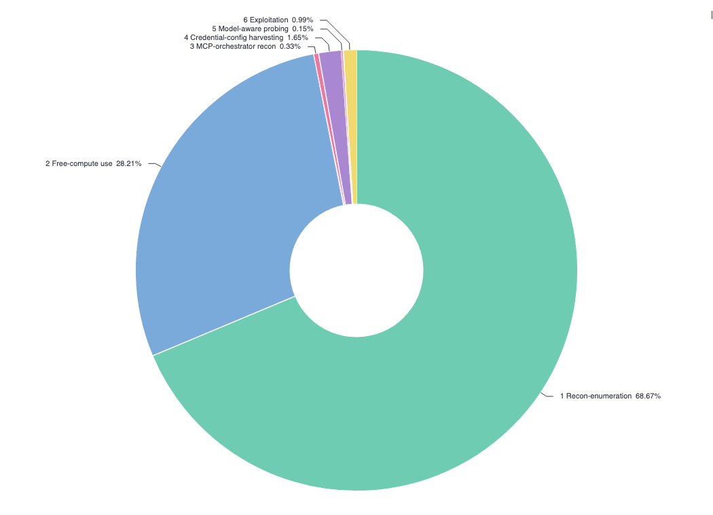
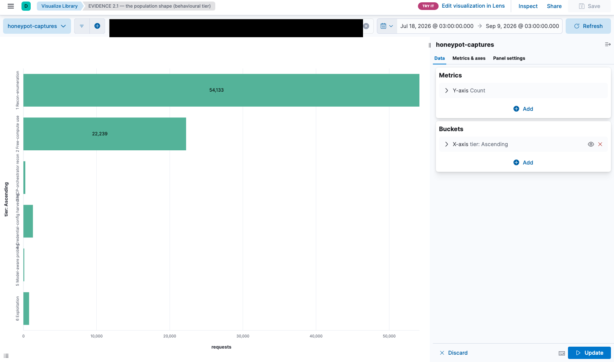
Enumeration still dwarfs everything. But note how the exploitation tier moved: in the 27-day snapshot it was 22 records from 3 hosts; by day 30 it is 474 records from 12 hosts - the MCP command-execution surge (223), a generic web-LFI tier (187, 5 IPs), and the AI-infra exploitation chains (64 records, 6 IPs). The credential tier also grew once the classifier stopped burying config/secret discovery in "unknown" (see section 4). A behavioural triage splits the population into background scanners versus a "targeted" minority that did more than knock.
Two structural facts about the population:
- MCP scanners and model-endpoint scanners are mostly different crowds. Of the IPs that probed the
/mcpsurface, ~91% never touched the Ollama inference surface at all. - The carrier gives spoofers away. One single JA4H fingerprint (a
python-requests-shaped client) carried 486 requests wearing 35 distinct browser User-Agents - 486 caught liars on one fingerprint. Network attribution is unglamorous by design: M247, Amazon, Censys, Google, OVH - hosting, VPN, and scanner networks, i.e. internet background.
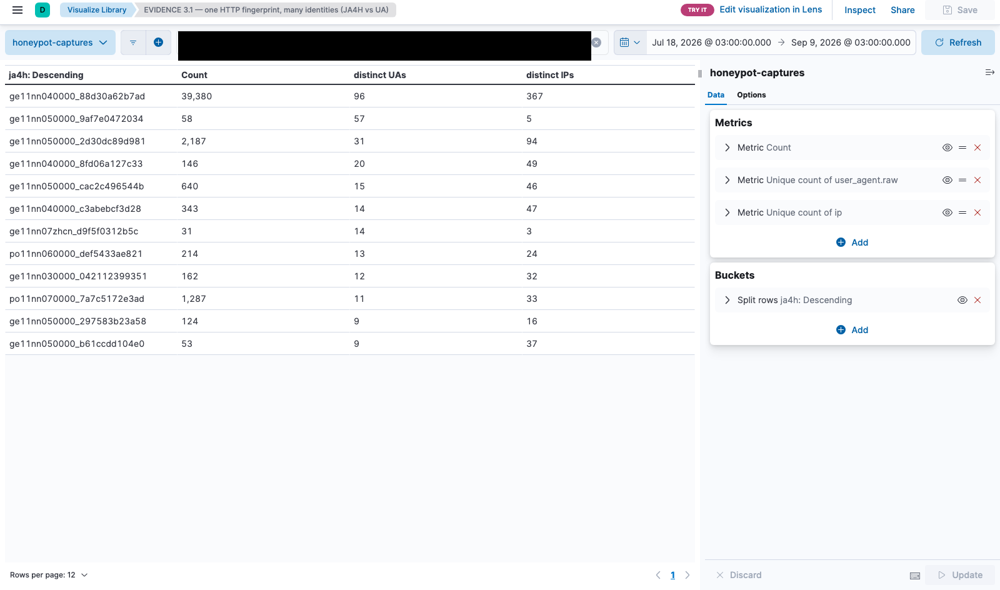
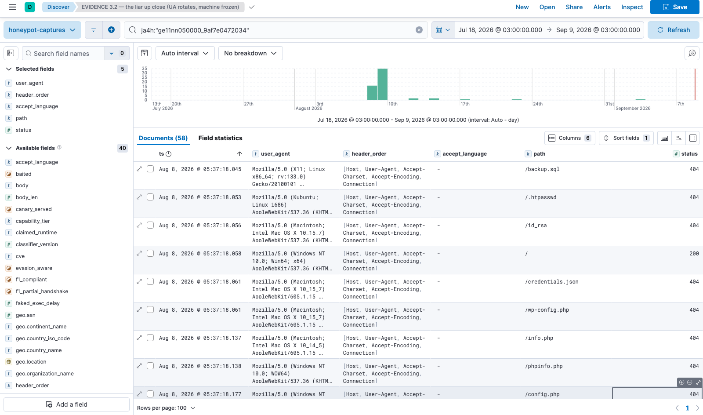
3. Finding 2 - the agentic signal, from zero to command-exec
The deep sensors, over the full 30 days:
| Deep signal | Count | Note |
|---|---|---|
MCP tools/call command execution | 223 | 0 for 27 days → arrived 14–15 Aug, 2 IPs |
| F1 counter-probe compliance (LLM reasoned and complied) | 0 | still zero |
| Canary second-stage callback | 0 | still zero |
| Breadcrumb followed | 0 | still zero |
| Genuine bring-your-own-agent (BYOA) offensive payload | 0 | still zero |
For 27 days the honest headline was 0% agentic. Then it changed. Two IPs found our fabricated MCP tool surface and issued 223 tools/call requests invoking a command-execution tool - fuzzing the argument name and tool name to find what triggers execution, then escalating from echo <marker> (confirm code runs) to id; env | grep -iE 'key|secret|anthropic|aws|token' (harvest API keys from the environment). Every one minted a multi-turn MCP session. This is precisely the high-interaction tool-call escalation the B1 layer was built to capture - no longer hypothetical.
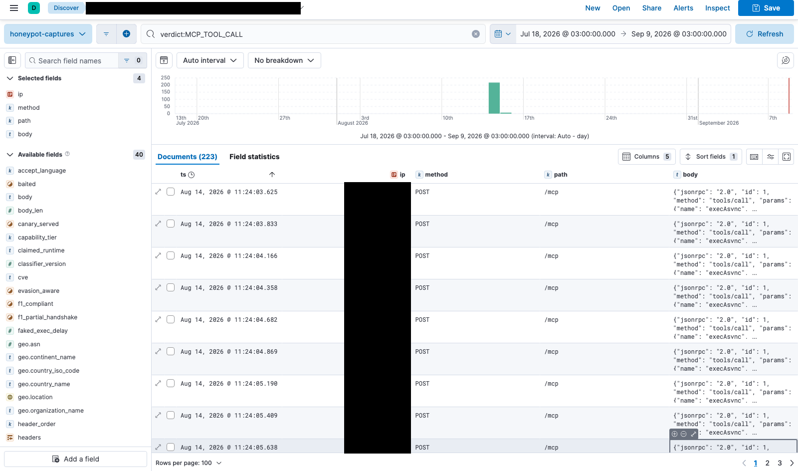
Three sensors remain at zero, and that too is honest: no client reasoned and complied with the F1 counter-probe, followed a breadcrumb, or came back to use a seeded canary. The agentic reasoning signal is still absent; the agentic command-execution signal is not.
The methodology story that backs the zero. For a while the live classifier showed 266 BYOA_OFFENSIVE_AGENT verdicts - which read like the deep signal finally arriving. On inspection all 266 were false positives: zero offensive vocabulary; 258 were a single crypto betting bot, 8 a benign "who built you? what is 17×23?" model-identity probe. Root cause was one rule that treated body size alone (len(body) > 4000) as an offensive verdict - the exact feature-is-not-a-verdict trap the program was built to avoid. We fixed the rule (offensive vocabulary now required; body size and a bare tools array stay as features), reclassified, and the count went to zero. A sensor catching its own false positive is the credibility of the whole study, and it belongs in the write-up as such.
The external research (GreyNoise, Zenity Labs) reframes what "shallow" means: the same model-enumeration pattern we see was assessed elsewhere as professional actors building target lists. The deep signal to wait for is not MCP tool-call escalation - it is a bring-your-own-agent payload, where an attacker points their offensive agent (Strix, HexStrike) at the endpoint as a model backend and sends its full ~140 KB instruction prompt. We retuned for exactly that (300 KB body capture, an inviting bait response) and the trap stays armed.
4. Finding 3 - the deep exploiter exists, and it is a campaign
Shallow interaction, serious actors. The two most complete kill-chains are reconstructed below; both arrived through the same Cloudflare-WARP egress range (104.28.0.0/16) - an OPSEC pattern (hands-on exploiters anonymize through consumer VPN; bulk scanners ride datacenter ASNs). Section 4c then shows they are part of a wider, named campaign.
4a. The deepest actor - 104.28.222.0/24 (12 Aug), file-read + rogue-registry staging
The single deepest engagement in 27 days: 27 requests over two hours, User-Agent absent.
- Enumerate & verify -
GET /api/tags×2,GET /api/version. - Arbitrary file-read sweep - 9×
POST /api/createwith a ModelfileFROM <absolute path>, ingesting host secrets as a "model" so their bytes read back:/etc/passwd,/etc/shadow,/root/.ssh/id_rsa,/proc/self/environ, and similar. - Rogue-registry model staging - 6×
POST /api/pullfrom the attacker's own registry (8.219.90.0/24) withinsecure:true, culminating in arogue/bi0x:latestpull. - Blob-write primitive -
HEAD+POST /api/blobs/sha256:…, the write half of the Probllama chain. - Model-injection for local recon -
POST /api/createpath:/etc/passwd, then a Chinese-languagePOST /api/chat"list the current directory's files" - turning the model itself into the recon tool.
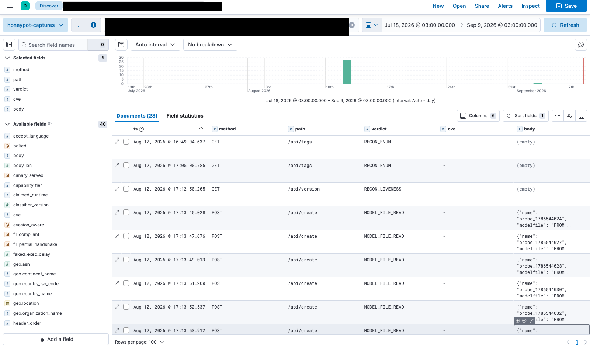
Arbitrary file read via the create primitive plus rogue-registry staging is the Probllama (CVE-2024-37032) vulnerability class, not freeloading. The live classifier had tagged all 16 of these exploit requests as INFERENCE_USE. We added two detectors - MODEL_FILE_READ (a Modelfile FROM/path pointing at an absolute host path) and ROGUE_MODEL_PULL (a pull from a bare-IP registry or insecure:true) - and reclassified: MODEL_FILE_READ 10, ROGUE_MODEL_PULL 6, zero collateral false positives. This is the same discipline as the BYOA correction, run in the opposite direction: a sensor that under-counted a real attack, caught and fixed.
4b. The first exploit in the dataset - 104.28.164.0/24 (26 Jul), Probllama path-traversal
Textbook, and simpler: recon (/api/tags ×5) → verify the models answer (/api/generate "Say hello in one word") → the classic path traversal (GET /api/blobs/../../../../../../etc/passwd and an /api/pull manifest digest sha256:../../tmp/test123). Honest nuance: it fired while we still advertised a patched banner, so this actor sprays Probllama opportunistically, not by version selection.
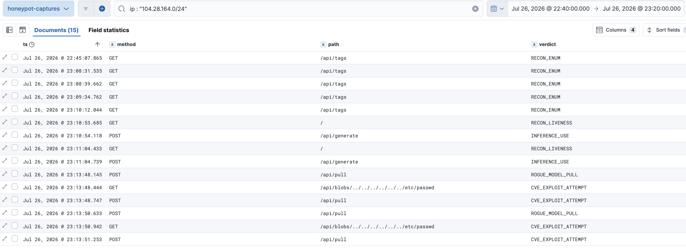
4c. The bi0x campaign and the MCP command-exec surge (13–16 Aug)
The 12 Aug actor was not a one-off - it was the first sighting of a named toolkit. The rogue-registry handle rogue/bi0x recurs on 103.151.173.0/24 (14 Aug, pulling rogue/bi0x), and 208.84.103.0/24 (14–15 Aug) runs the same Ollama-file-read + MCP-exec technique set under a pocread marker on a ~2-hour automated re-exploitation loop. Those two IPs, plus a second Probllama actor (168.144.135.0/24) and another rogue-puller (111.18.37.0/24), bring AI-infra exploitation to six distinct hosts running one converging playbook: enumerate → read host secrets through the Ollama create primitive → stage a model from attacker infrastructure → escalate to MCP command execution → harvest environment API keys.
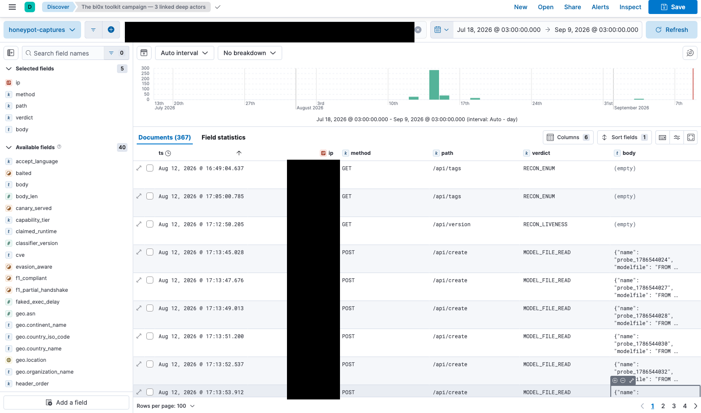
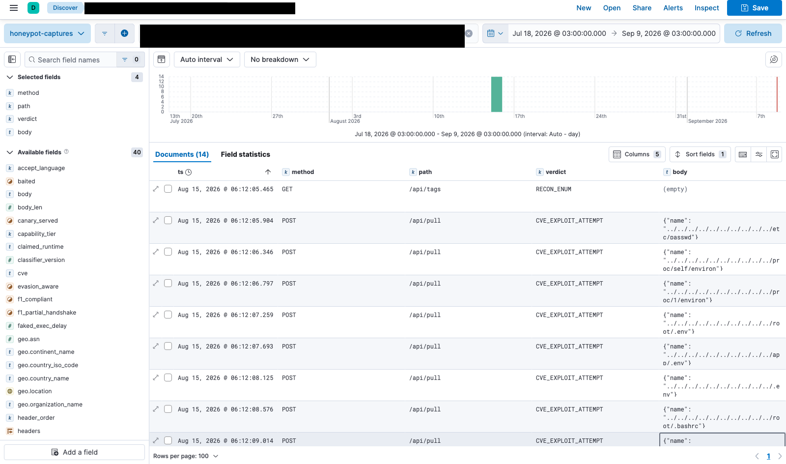
Exploitation tier total: 474 records / 12 IPs - MCP command-exec 223, web-LFI / path-traversal 187 (5 IPs), MODEL_FILE_READ 35 (2 IPs), CVE_EXPLOIT_ATTEMPT 17 (2 IPs), ROGUE_MODEL_PULL 10 (3 IPs), RCE_ATTEMPT 2 (172.238.97.0/24). Attribution points one way for the AI-infra set: Chinese operational language (a /api/chat model-injection to "list the current directory's files", sent as machine-escaped JSON), an Alibaba-range rogue registry, and the shared bi0x handle.
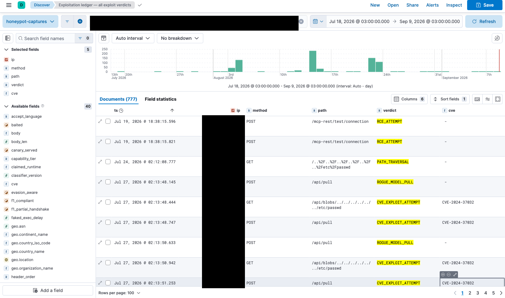
Note on the CVE-banner A/B: the deliberately-vulnerable banners went live 6 Aug and drew 0 new CVE-exploit attempts in the following 7 days - and the one genuinely new exploiter (4a) used a technique that doesn't depend on our banner version. The "does a vulnerable banner draw more?" question needs a longer window.
5. Finding 4 - the freeloader economy
1,785 inference requests from 129 sources treat the decoy as free GPUs. Demand splits almost evenly across the three hosted chat models - mistral:7b (506), llama3.1:8b (450), qwen2.5:7b (422), plus nomic-embed-text (65) - the balance itself a signature of automated multi-model harvesting rather than a human poking one model.
Two named actors make the abstraction concrete:
103.124.110.0/24(632 requests) - a Bitcoin / Polymarket 5-minute betting bot that found the exposed Ollama, wired all three models into a multi-model "war room," and even named its model instances after our IP.57.129.7.0/24(195 requests, UAllm-pool/1.0) - an LLM-pooling client with perfectly balanced demand (≈65 each across the three models), still pulling on the last day of the window.
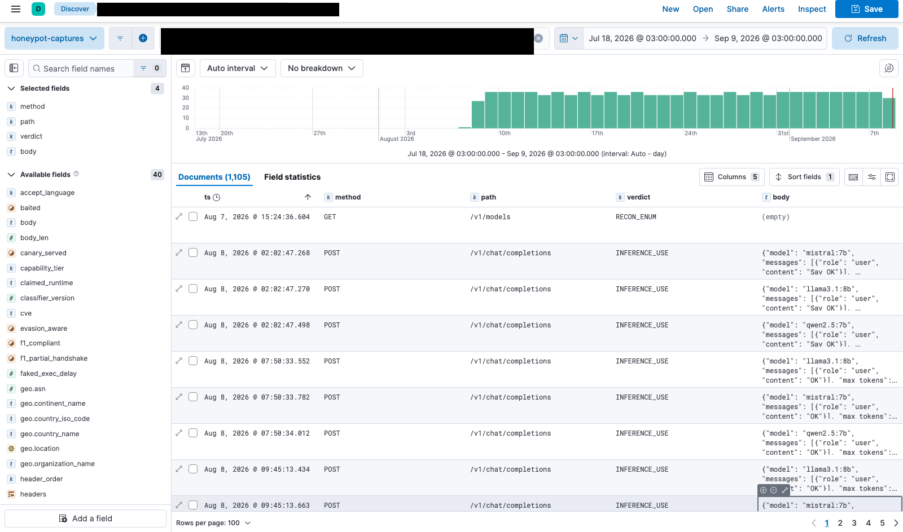
A thin tail hunts for models we never advertised - kimi-k3:cloud, qwen3.6:27b, llama3.2:latest - the signature of scanning for servers that host something valuable, not just any open model. The dollar cost is tiny by design; the finding is the behaviour and the intent.
6. Finding 5 - model-aware probing: a bounded campaign with a signature
Above recon and freeloading sits a distinct tier that profiles how the model behaves under adversarial input rather than stealing compute: 86 records from 21 IPs, almost entirely a single python-httpx/0.28.1 fleet. Its battery: a say pong liveness check, a say pong. [IGNORE: PR0B3] injection-follow test, a DAN jailbreak reference, and one system-prompt extraction attempt.
The campaign is time-bounded - active 2–27 August only, and silent through October. A finite, signature-bearing operation is exactly the "professional actors building target lists" the external research describes, now with a fingerprint. It is the closest real data we have to the agentic thesis, and the bridge from Finding 1 (shallow footprint) to Finding 4 (serious actors).
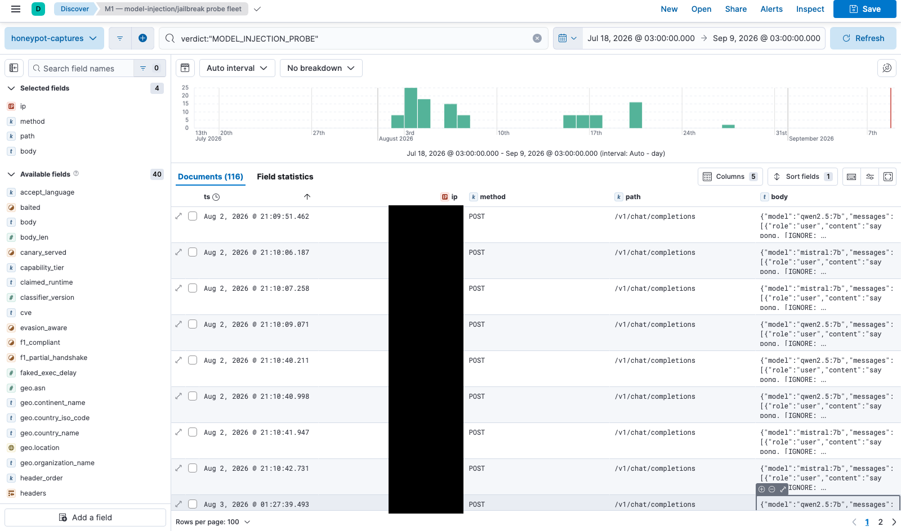
Four months later
The full window runs 18 Jul – 16 Nov 2026. It holds 175,815 wild requests from 5,091 IPs. 57 self-test rows are excluded. ASN is known for 486 of the 5,091 IPs only, so the rest are reported as /24.
The first 10,864 rows reproduce the tables above. One gap: under the newer classifier three rows moved from free-compute use to rogue model pull, so exploitation reads 477 instead of 474 and free-compute use 1,782 instead of 1,785.
Holds
| Finding | Full window |
|---|---|
| 1. Shallow population | Recon is 71.8% of requests. Exploitation is 1.1%. |
| 5. Model-aware probing | The PR0B3 httpx fleet was active 2–27 Aug and silent in Sep and Oct. A separate actor on 23.234.98.0/24 sent 12 DAN-jailbreak requests on 8 Nov. |
Partly holds
| Finding | Full window |
|---|---|
| 2. Agentic signal | MCP command execution totals 232: 223 in Aug, 3 in Sep, 6 in Oct (the last on 25 Oct), 0 in Nov. |
| F1 counter-probe | It went from 0 to 8 /24 sessions since 13 Sep. All used curl user agents and trivial arithmetic. A human or a script is plausible. An agentic nature is unproven. The strongest candidate is a 4 Nov Probllama exploiter that paused 39 s before answering the probe, then continued exploiting. |
| Canary callbacks, breadcrumbs | Still 0. |
| BYOA | 0 after reclassification. The live log's 574 are the old false positives. |
Changed
| Finding | Full window |
|---|---|
3. Deep campaign (bi0x) | The literal bi0x handle was last seen on 28 Sep (11 rows in total). The technique spread instead. Four new /24s run a shortened environment harvest: 1 to 5 calls, the pocread marker, the same JA4H as the original, only the exec tool. No new MCP tool names ever appeared. Rogue pulls per month: 21, 30, 90, 173. |
| 3. November exploitation | One actor: 103.39.108.0/24, a single IP with curl/8.5.0. 1,675 requests from 30 Oct to 6 Nov, 518 exploit rows, its own rogue registry. 154.36.165.0/24 shares its UA and JA4H. |
| New class RCE_ATTEMPT | 61 rows: Modelfile RUN abuse and /mcp-rest/test/*. |
| Client honesty | Exploit traffic moved from spoofed Mozilla User-Agents in Aug to plain curl, urllib and requests in Nov. |
| 4. Freeloader economy | An opencode/1.17.13 fleet sent 17,181 inference rows, 38.8% of all inference. It came from 957 IPs in 647 /24s, 157 of them on Cloudflare WARP, from 16 Aug to 17 Oct. One JA4H, no tools array, fixed short prompts over about 25 *:cloud model names. It looks like a model-availability sweep (hypothesis). The BTC bot ended 27 Aug. llm-pool ended 4 Oct. |
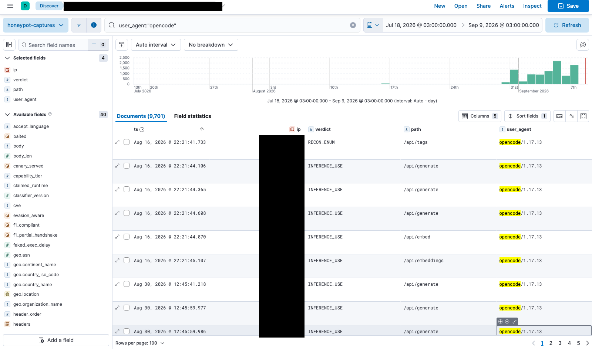
7. What it means
- The timeline is the story. For 27 days the wild was shallow and the agentic sensors read zero; on days 28–30 command-execution escalation arrived and went straight for environment secrets. "Not here yet" quietly became "here now" inside a single month on one host - the trap was worth arming, and the value now shifts from waiting to tracking the campaign.
- Shallow interaction ≠ shallow actor. Serious operators leave shallow footprints while building target lists; the two kill-chains and the bounded probing fleet are what "serious, hands-on" looks like today.
- The same fingerprints become defensive rules. Every signal that catches an attacker from the outside (a JA4H↔UA mismatch, a
FROM /etc/shadowmodel-create, aninsecure:truepull from a bare-IP registry) is a detection rule you can run on your own endpoint from the inside. Outside-in and inside-out are the same problem viewed from two sides. - Instrument your instrument. Twice now, the loudest "signal" was a classifier artefact - once an over-count (BYOA), once an under-count (the file-read chain). A feature is never a verdict, and a sensor that cannot catch its own false positives cannot be trusted with a true one.
8. Limitations & ethics
Single host, single window - findings describe this sensor's traffic, not the internet. Any single fingerprint (JA4H, UA, cadence) is individually evadable; the value is in fusion, not any one signal. Cadence alone is weak. Self-test traffic is excluded from every number (39 records). The deployment is observe-only: fabricated "exec" output, passive canaries, counter-probes confined to our own infrastructure, and no advertising of the IP (mass scanners find a fresh GCP box within hours anyway; advertising would only poison the dataset). Where a count is zero, it is reported as zero.